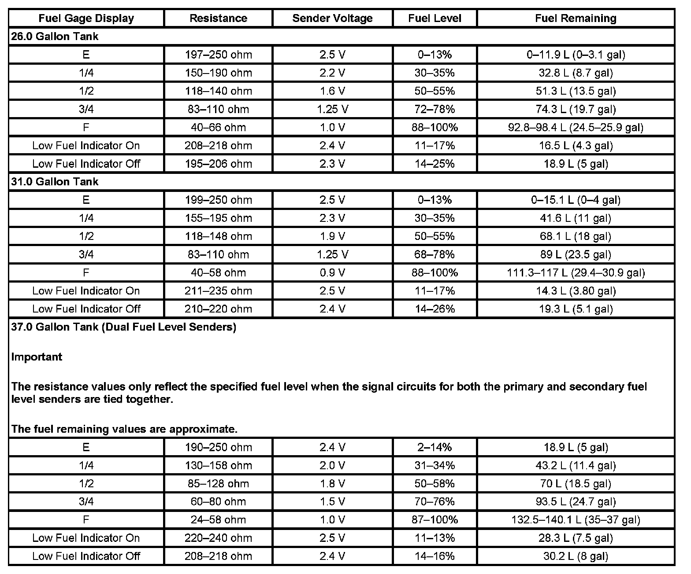

Fuel Level Sensor: Specifications
FUEL LEVEL SPECIFICATIONS
The information in this table is intended for use with the J 33431-C Signal Generator and Instrument Panel Tester. The fuel level sensor values represent the test values to be used on the Signal Generator to drive the fuel gage display to the indicated positions. Vehicles that require more than one fuel level sensor calculate gage position from many possible resistance combinations of fuel levels between the two tanks. Therefore, the values in the table may not correlate directly to readings taken from the vehicle primary or secondary sending units.

The values in the table are approximate values based on information obtained from properly operating vehicles. Actual results may vary slightly.